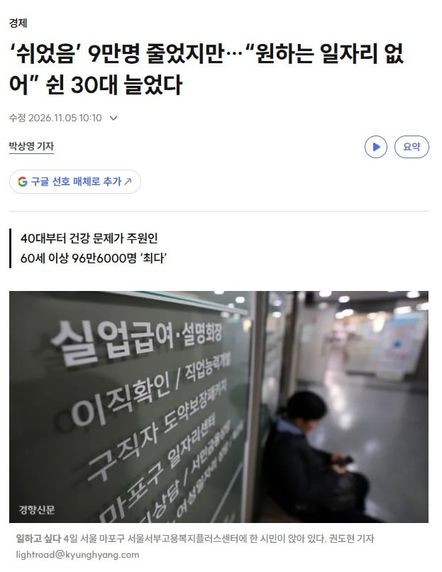
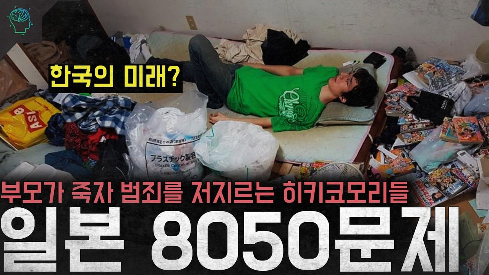
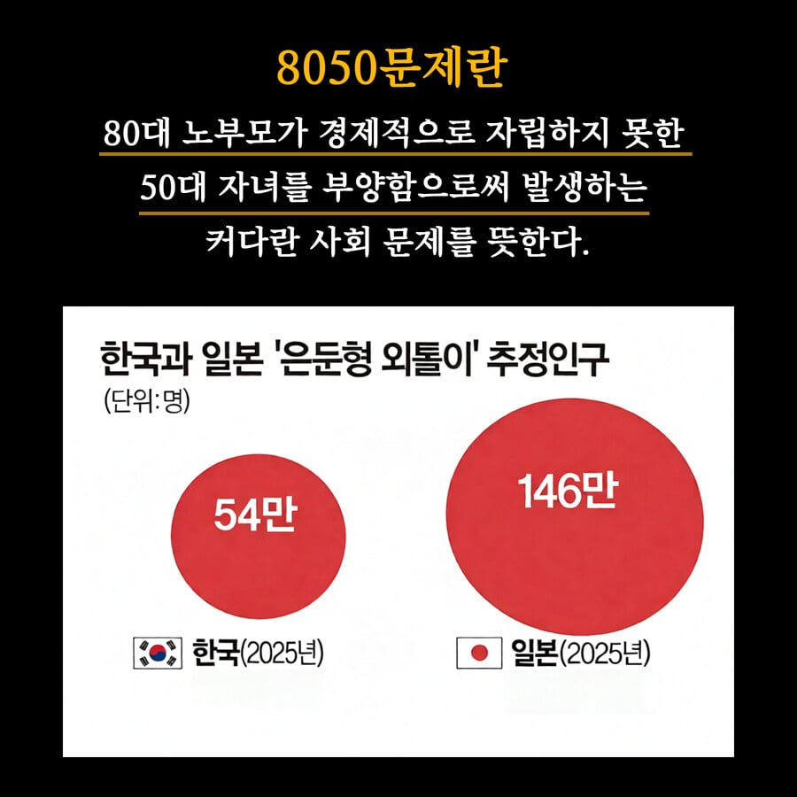

일본 사회문제로 유명한 8050문제
정확히 한국이 일본이 겪는 8050문제의 첫걸음 내딛었다고 함



일본 사회문제로 유명한 8050문제
정확히 한국이 일본이 겪는 8050문제의 첫걸음 내딛었다고 함
아직은 스탠다드 아님
수입 없는 소비만의 생활은 벌레와 다를 게 없음
스탠다드 미사일ㄷㄷ
취준생이나 재취업 희망자는 쉬었음 인구에 포함 안됨
아직은 아닌데 곧 될거같음…
일자릴 구할 의지와 최소한의 의지가있으면 쉬었음 아니잖아..
한국은 저러진 않을거라 생각했는데
요즘 애들 부둥부둥 하는 거 보면 저런 상황에서 끝까지 데리고 계시는 노부부 많을 거 같긴함
일단 자립까진 아니어도 캥거루족 하면서 돈은 벌어야..
ㅋㅋㅋ 앞으로는 더할거같음
사무직하다가 건설현장도 가고 식품공장도 갔는데 뒤지게 힘들엉.. 빌고 빌어서 다시 사무직 간다
NC 대기발령자 근속에 따라 최대 30개월치 급여를 더 준다는데, 거절해도 불이익은 없다.
넥슨 쪽은 공식 희망퇴직은 없다고 하면서, 장기 대기발령자한테는 법인별로 개별 면담으로 넌지시 권고사직을 제안하는 중. 대기발령자만 합치면 300명을 넘는것같고
롯데하이마트는 4년 만에 희망퇴직 모집 공지. 나이·근속에 따라 위로금 주고, 재취업 지원금에 자녀 학자금까지 붙임. 전자제품 매장 직원들도 이제 대상.
HP 한국법인은 더 노골적임. 권고사직 통보하고, 기한 안에 안 쓰면 정리해고로 전환한다고 예고함. 왜 대상인지 평가 결과 보여달라는 말에도 회사는 알려줄 수 없다
KCC는 10년 만에 전 사업부 희망퇴직. 신청이 적으면 직무 재배치·지방 전환 배치까지 거론
크래프톤은 실적 좋을 때 전 직원 대상 자발적 퇴사 프로그램을 열었고 약 200명이 나감.
게임업계위주로 줄줄 타격 나오는중
AI수혜 ? 해킹사태나 줄줄나오고.
당장 지금세대는 수혜 못받음
그렇다고 ai사용이나 이래저래 안배우면
키오스크 어르신 행이고
10대초반 애들도 애매한위치긴해도
지금태어나는 애들은 받을만함
ai발전 동력에는 요소가 있는데
저출산,고임금,고물가 임
마침 우리나라는 3개다 해당이고
거기다 우리나라는 로봇 밀도가 세계최고임 자동화 조낸 돌아가기 기반은 이미 있음 현대기아도 로봇공장 인수하고 기업들은 원초에 미래대비 하고 있음 수익성이 아니라 미래 생존을 준비하는 느낌
출산 꼴등+ 고령화 1등 = 로봇밀도 1등
사실 밀도라해봐야 엥 중국처럼 안보이는데?
거의 공장에 쳐박힌 산업용들이라 그럼
좀더 Ai완벽해지면 엔지니어 제외 사람없는 공장도 줄줄 생길거고.
월가에서도 한가지 말함
"로봇 혁명은 공상과학이아니라 인구통계가 이끈다"
IMF 도
노동 참가율 제고 / 자원배분 효율화 / AI 도입 확대
이거면 고령화 부담 완충장치 만들수 있을거라 봄
다만 한국은행은 경고하긴함
지금 샌드위치에 낀 불쌍한 청년층은 > 숙련될 기회를 잃는다 .> 청년은 희소한데 쓸모가 없다가 될까봐
그리고 조선소가 이 부분에서 가장 눈에 뛰는데
십몇년된 경력도 중견 공장 노동자보다 못버는일 많은데 이렇게 후려쳐도 결국 돌아감 외노자? 애들도 알아서 도망가기 시작 했는데도 굴러감 용접공 로봇나와서
세줄요약좀
어차피 조져지는건 인간이다
간단하게 말하면 2030기준으로는
"경력을 쌓기에는 늦게 태어낫고 Ai수혜를 받기에는 일찍태어낫다"
신뢰도 여부를 떠나서 이런 개붕이처럼 글을써야 상황이 더나아질텐데 커뮤라 그런가 무지성인 애들이 많아서 대화가 안대..
웅앵앵 안들려~
개인의 나약한 의지가 문제야! 전부 강제로 노역시켜야 해~
좇선소 땜쟁이임
올해 초에 용접로봇 쫙 깔리기 시작함
언론에서 취재오고 유튜브 찍어가고 했음
근데 지금은 거의 대부분 없어짐
효율이 똥망임
아직은 하청업체 굴리는게 더 나음
빨라도 10년은 더 걸릴 듯
조낸 어려운각도 말고는 안쓴다고 듣긴한듯
지금부터 5년만 지나도 묻지마 범죄 ㅈㄴ 나올듯
30대가 일자리 눈을 낮추면 되자나?ㅋㅋㅋ
어차피 영포티 개드립에선 알빠노인 일 ㅋㅋ
저출산이 축복일까?
ㅖ
지금같은 인프라 작업끝난 첨단사회면 이득이고
농사나 산업혁명 초기같은거면 불이익임 이거 관련해서 노벨 경제학상 받은 사람이
논문 쓴거 있는데 이름이
Baby Busts and Growth Booms 였을거
뭐라도 시키면 안되나
싹다 잡아가서 탄광같은데 가두고 채찍질하면 해결됨
혹시 신안에 거주중이신가요?
이정도면 레볼루숑해야하는데, 자업자득같음
8050 워딩 무섭네
지금 일하고 있는 사람들은 그나마 다행인데 지금 취준하는 애들은 진짜 헬인듯
근데 내년 가면 더 힘들고 내후년가면 더더더 힘들 거 같아서 걱정이야
90년대 초반생이라 막차타서 다행인거같음
ㅋㅋㅋ 곧죽어도 현장직은 절대 하기싫죠
이제 '쉬었음'은 특정세대의 문제가 아님
AI와 로봇이 취업난을 가속화하면서 일하는 사람 숫자가 계속해서 줄어들게 될 것임
'쉬었음'은 몇몇의 문제가 아닌 한 시대의 스탠더드임